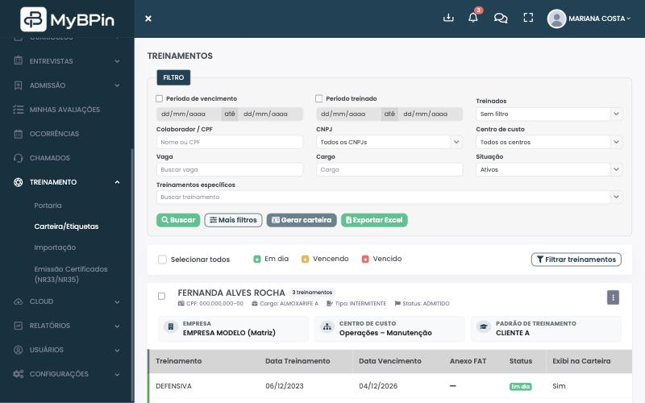

Dor
“Cadê o histórico dessa pessoa?”
Currículo num lugar, exame em outro, pasta compartilhada sem dono.
→ Cadastro único, do currículo ao desligamento.
Sistema integrado de soluções em gestão de RH, DP, SST e processos 100% digitais — recrutamento, admissão, exames, treinamentos, ponto e movimentações num só lugar.
Dores de RH, DP e SST que a gente escuta todo dia — e o que muda quando o MyBPIN entra.
Dor
Currículo num lugar, exame em outro, pasta compartilhada sem dono.
→ Cadastro único, do currículo ao desligamento.
Dor
Vaga, férias e demissão travadas em mensagem.
→ Fluxo com quem aprovou e quando.
Dor
WhatsApp, planilha e memória do recrutador.
→ Portal, triagem e entrevistas rastreadas.
Dor
Redigitar dados e correr atrás de exame.
→ Pré-admissão digital e processo em sequência.
Dor
Prazos de exame, treinamento e férias.
→ Alertas e relatórios de vencimento.
Dor
Escala num Excel, ocorrência no e-mail.
→ Ponto, conferência e folhas no sistema.
Gestão de mobilização do MyBPIN: onze etapas, do planejamento da vaga ao retorno de quem já passou pela empresa — em RH, DP e SST.

01/11
Requisição de vagas e planejamento mensal de movimentações: admissões, férias, demissões, promoções e transferências.
Ver recursos de Gestão de RH
02/11
Banco de talentos próprio, integração com o “Trabalhe conosco” do seu site e comunicação com candidatos por e-mail e WhatsApp.
Ver recursos de Recrutamento & Seleção
03/11
Entrevistas roteirizadas com RH, gestor e técnico, provas técnicas por e-mail e PDF de resultado integrado do candidato.
Ver recursos de Recrutamento & Seleção
04/11
O candidato envia os documentos de admissão online e o RH controla o encaminhamento para exames.
Ver recursos de Administração de Pessoal
05/11
Encaminhamento e controle de exames, listas de frequência e avisos programados de vencimento.
Ver recursos de Segurança e Treinamentos
06/11
Cadastro do colaborador e emissão de contratos, termos e documentos legais, reunidos no dossiê online.
Ver recursos de Administração de Pessoal
07/11
Emissão online dos documentos de portaria para liberar o acesso do colaborador.
Ver recursos de Administração de Pessoal
08/11
Carteiras de treinamentos, certificados e etiquetas de bloqueio emitidos pelo sistema.
Ver recursos de Segurança e Treinamentos09/11
Férias, promoções, transferências e ocorrências de ponto, registradas no histórico do colaborador.
Ver recursos de Gestão de RH
10/11
Checklist de demissão integrado com almoxarifado e SST, baixa de EPIs e entrevista de desligamento.
Ver recursos de Administração de Pessoal
11/11
Histórico preservado e fluxo de aprovação para recontratar quem já passou pela empresa.
Ver recursos de Gestão de RHClique em um módulo e veja, na hora, a tela e a lista completa de recursos.

Módulo 01
Otimização do processo seletivo, com qualidade e agilidade na contratação.
Troque de módulo nas abas acima — a lista muda sozinha a cada 7s.

Módulo 02
Mais tranquilidade nos processos de RH e tempo para a gestão estratégica.
Troque de módulo nas abas acima — a lista muda sozinha a cada 7s.

Módulo 03
Solução padronizada para admissão, documentos, férias e ponto.
Troque de módulo nas abas acima — a lista muda sozinha a cada 7s.

Módulo 04
Ambiente seguro, produtividade e prazos de ASO e treinamento sob controle.
Troque de módulo nas abas acima — a lista muda sozinha a cada 7s.

Módulo 05
Otimização do desempenho operacional com rotinas e comunicação integradas.
Troque de módulo nas abas acima — a lista muda sozinha a cada 7s.
Recursos contratados à parte para amarrar a operação — integrações, ponto facial, dashboards e personalização sob medida.
Monte o pacote com o que a sua operação realmente precisa — sem pagar o que não vai usar.
Quero falar dos adicionaisNão achou a sua? Chama a gente no WhatsApp.
Não. É um sistema integrado de soluções em gestão de RH, DP, SST e processos 100% digitais — do recrutamento ao desligamento, com exames, treinamentos, ponto e movimentações no mesmo cadastro.
Sim. Gestores requisitam vagas e aprovam férias e demissões; o DP cuida de admissão e ponto; o SST acompanha ASO e treinamentos. Cada perfil vê só o que a permissão libera.
Sim. Há portal de vagas com link público de candidatura, banco de currículos e etapas de seleção rastreadas.
Há relatórios e alertas de vencimento, com notificações no sistema e por e-mail — para o prazo não passar batido.
Desde 2019 no mercado, ajudando operações de RH, DP e SST a sair da planilha e digitalizar processos de ponta a ponta.
Preencha o formulário e o nosso time entra em contato. A mensagem chega pronta no WhatsApp — sem compromisso.